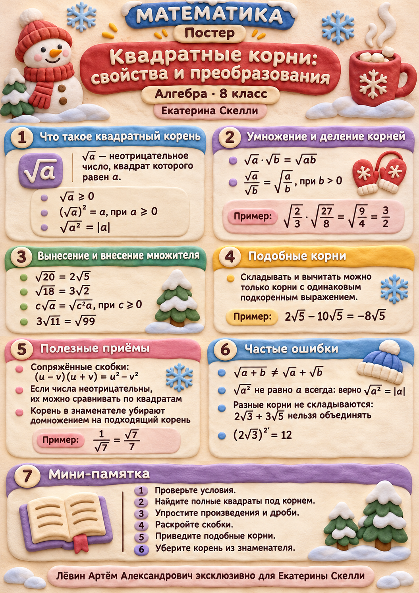

Личный учебный атлас · 20 ноября 2026
Корень.
Правило.
Результат.
Квадратные корни становятся удобными, когда Вы узнаёте полный квадрат, умеете группировать множители и различаете сумму и произведение.
Алгебра · 8 класс · Квадратные корни и преобразование выражений

Одна идея — три записи
От чего отталкиваемся
Что означает √a
Арифметический квадратный корень из неотрицательного числа a — это неотрицательное число, квадрат которого равен a.
√(a²) = |a|.
Например, √49 = 7. Также √0 = 0. У выражения √(−4) действительного значения нет.
Условие
a ≥ 0 — обязательное условие существования √a в действительных числах.
Если корень находится в знаменателе, значение знаменателя должно быть отличным от нуля.
√(a²) всегда неотрицателен. При a = −5 получим √25 = 5, то есть |−5|.
Произведение, частное и дроби
Два корня можно собрать в один
Умножение и деление квадратных корней допускают равносильные преобразования при соблюдении ограничений. Для суммы такого правила нет.
Нельзя заменять √a + √b выражением √(a + b). Сначала найдите сумму под корнем, если это возможно.
Разобранный пример
Вычислите произведение √(2/3) · √(27/8).
После объединения корней дробь удобно сократить прямо под знаком корня.
Почему получилось 9/4?
Под знаком корня: (2 · 27)/(3 · 8) = 54/24 = 9/4. Далее √9/√4 = 3/2.
Смешанные числа сначала переводим в неправильные дроби
Пример: √[(2 23/49) · (2 2/49)] = √[(121/49) · (100/49)] = 110/49.
Порядок действий: перевести числа в дроби → перемножить дроби → извлечь корни там, где возможно.
Главный вычислительный приём
Вынесение множителя из-под корня
Ищем в подкоренном выражении полный квадрат — число вида 4, 9, 16, 25, 36, 49 и так далее. Он становится множителем перед корнем.
Обратный приём
Внесение множителя под корень
Внесённое положительное число обязательно возводится в квадрат.
2√8 = √(4 · 8) = √32.
4√7 = √(16 · 7) = √112.
Если множитель отрицателен, минус остаётся перед корнем: −3√2 = −√18.
Ещё одно преобразование: сокращение общего корня
(√14 − √28)/√7 = [√7(√2 − 2)]/√7 = √2 − 2.
Мы можем сократить на √7, потому что √7 ≠ 0.
Исследуйте правило сами
Найдите полный квадрат
Изменяйте число под корнем и наблюдайте, как автоматически находится наибольший квадратный множитель. Сравните несколько случаев.
Обратите внимание на простые числа: под их корнями уже нет квадратного множителя больше единицы.
Сложение и вычитание
Сначала одинаковые корни
Складываем коэффициенты только у слагаемых с одинаковыми подкоренными выражениями. Если они разные, сначала попробуйте вынести множители.
√20 − √500 + √75
= 2√5 − 10√5 + 5√3
= −8√5 + 5√3.
Корни √5 и √3 нельзя объединить как один корень: они имеют разные подкоренные выражения.
Действия со скобками
Почему «фонтанчик» работает
Если в скобках сумма, каждый множитель участвует в распределительном законе. В записи 2(2√3) внутри скобок только произведение, поэтому достаточно перемножить коэффициенты.
Только множители
Сумма в скобках
При умножении двух двучленов получаются четыре попарных произведения.
Пример занятия
= 20 + 4√3 + 5√3 + 3
= 23 + 9√3.
Почему последнее слагаемое равно 3?
√3 · √3 = (√3)² = 3. Аналогично (2√3)² = 2² · 3 = 12.
(u − v)(u + v) = u² − v².
Поэтому (√17 − √3)(√17 + √3) = 17 − 3 = 14.
Неравенства и значения
Сравнивайте неотрицательные числа по квадратам
Возведение в квадрат сохраняет порядок двух неотрицательных чисел. Например, 7² = 49, а (5√2)² = 50, поэтому 7 < 5√2.
Работа со знаменателем
Уберите корень из знаменателя
Умножьте числитель и знаменатель на одно и то же ненулевое выражение. Если знаменатель — √7, удобно домножать на √7.
Также 5/√5 = 5√5/5 = √5; аналогично 3/√3 = √3.
Квадрат произведения
6/(2√3)² = 6/(4 · 3) = 1/2.
Квадрат в записи (2√3)² относится и к числу 2, и к корню из 3.
Домножение на √2/√2 не устранит корень √5 в знаменателе 1/√5.
Домашнее закрепление
10 заданий. От простого к сложному.
Отмечено: 0 из 10
Решайте самостоятельно. Отметьте выполненные задания и раскрывайте ответ только после попытки решения. Состояние отметок сохраняется в браузере.
Показать ответ
2/3.
Показать ответ
1/2.
Показать ответ
15/8.
Показать ответ
4√2.
Показать ответ
12√2.
Показать ответ
√99.
Показать ответ
15.
Показать ответ
8 > 3√7.
Показать ответ
23 + 9√3.
Показать ответ
2√3 − √5.
Короткая памятка
Проверка перед ответом
- 01 · УсловияПодкоренные выражения неотрицательны; знаменатели отличны от нуля.
- 02 · МножителиВынесите полные квадраты; при необходимости внесите коэффициенты.
- 03 · СкобкиИспользуйте распределительный закон или формулу разности квадратов.
- 04 · ИтогПриведите подобные корни и проверьте знаменатель.
Зимняя памятка
Квадратные корни в одной иллюстрации
В постере собраны свойства корней, типовые преобразования и частые ошибки.
Открыть постер